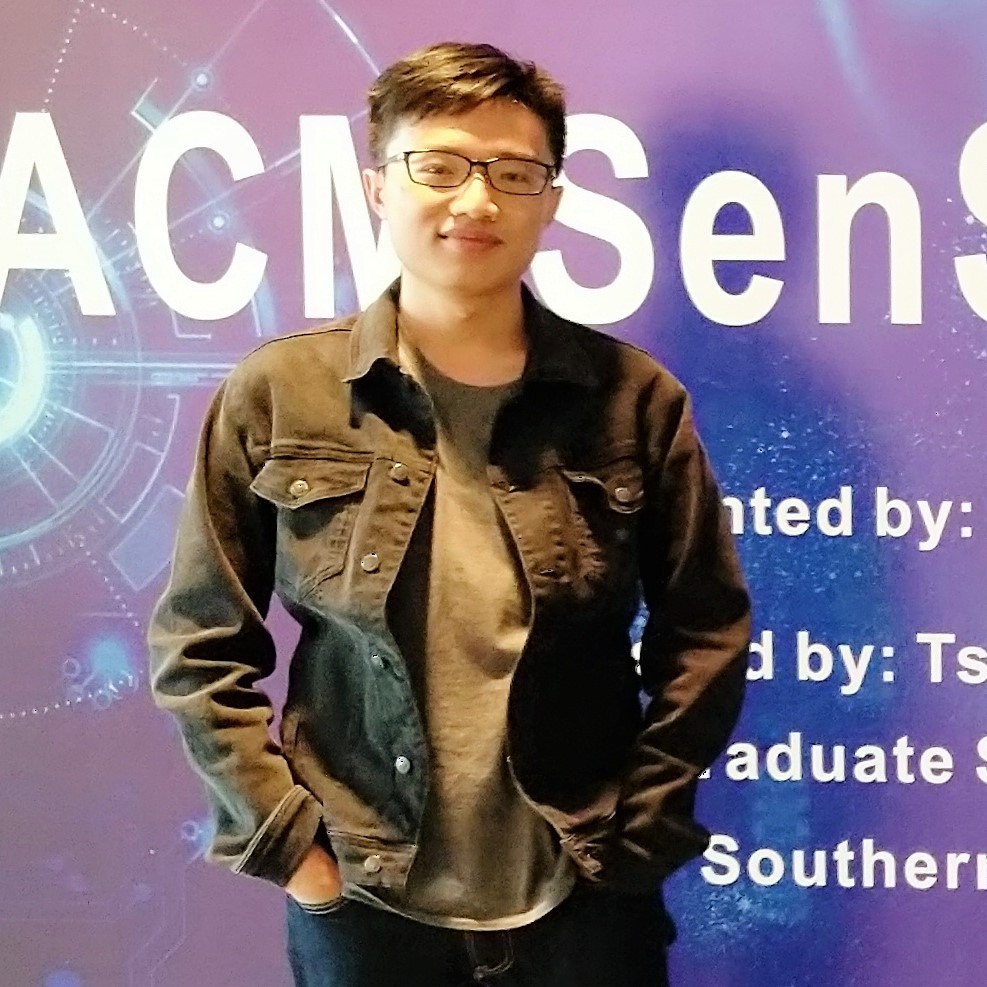

|  | Zifeng Wang (王子丰) |
Conferences:
[5] Zifeng Wang, Rui Wen, Xi Chen, Ercan E. Kuruoglu, Shao-Lun Huang, and Yefeng Zheng, “Uncertainty-guided Curriculum Learning via Infinitesimal Jackknife”, Under review, 2020. [PDF] [Code]
[4] Zifeng Wang, Xi Chen, Rui Wen, Shao-Lun Huang, Ercan E. Kuruoglu, and Yefeng Zheng, “Information Theoretic Counterfactual Learning from Missing-Not-At-Random Feedback”, Under review, 2020. [PDF] [Code]
[3] Zifeng Wang, Rui Wen, Xi Chen, Shao-Lun Huang, Ningyu Zhang and Yefeng Zheng, “Finding Influential Instances for Distantly Supervised Relation Extraction”, Under review, 2020. [PDF] [Code]
[2] Zifeng Wang, Rui Wen, Xi Chen, Shilei Cao, Shao-Lun Huang, Buyue Qian and Yefeng Zheng, “Online Disease Self-diagnosis with Inductive Heterogeneous Graph Convolutional Networks”, Under review, 2020. [PDF]
[1] Zifeng Wang, Hong Zhu, Zhenhua Dong, Xiuqiang He and Shao-Lun Huang, “Less Is Better: Unweighted Data Subsampling via Influence Function”, AAAI 2020. [PDF] [Code]
Journals:
[2] Zifeng Wang, Yuyang Zhang, Khalid M. Mosalam, Yuqing Gao and Shao-Lun Huang, “Deep Semantic Segmentation for Visual Understanding on Construction Sites”, Under review, 2020.
[1] Zifeng Wang and Suzhen Li, “Data-driven Risk Assessment on Urban Pipeline Network Based on a Cluster Model”, Reliability Engineering & System Safety, 2020, 196: 106781. [PDF]